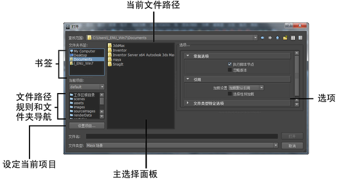

- 保存、打开、导入、导出或导航计算机的文件系统时，将显示文件浏览器。

相关主题
文件夹书签
在“文件夹书签”(Folder Bookmarks)中单击任意文件夹，立即导航至主选择面板中的该文件夹。
可以通过将文件夹拖放到左上方的面板中来自定义这些书签。
当前项目
通过单击下拉框并选择项目来更改当前项目。Maya 会显示最近打开的所有项目。
通过在“当前项目”(Current Project)下拉框下方的面板中单击相应文件夹，可以快速导航至存储项目文件的各个文件夹。该面板既包含由项目规则定义的文件夹，也包含位于项目根目录中的文件夹。
通过单击“工作区根目录”(Workspace Root)，您可以随时返回到项目的根。
公用选项
默认 Maya 文件浏览器中可用的选项因您用于打开文件浏览器的操作而异。但是，在所有版本中，您可以执行以下操作：
- 通过单击位于“查找范围”(Look in)旁边的下拉菜单以及查看“最近的位置”(Recent Places)部分快速导航至最近保存的位置。
- 使用“查找范围”(Look in)字段的自动完成功能在该字段中编辑文件路径。
- 从文件浏览面板导航计算机的文件系统，或在“文件名”(File name)路径中直接输入文件路径。
- 使用向上、向后和向前按钮相对于当前位置导航文件系统，使用新建文件夹按钮创建新的文件夹，并通过在“列表视图”(List view)和“详细信息视图”(Detail view)之间切换来调整显示多少文件详细信息。
- 通过在主选择面板中选择图像来预览图像。预览图像显示在右侧的“选项”(Options)面板中。
- 通过单击“设置项目”(Set Project)按钮来设置当前项目，并从显示的小文件浏览器中选择文件夹。
- 按 Alt + 中间滚轮（Windows 和 Linux）或 Shift + 中间滚轮 (Mac OS)，在“文件浏览器”(File Browser)窗口中滚动条目。
- 通过在“文件名”(File name)字段中键入通配符并按 Enter 键来过滤文件名。结果将显示在主选择面板中。
支持的通配符包括：
- * - 表示任何长度的所有字符串。
- [] - 表示特定字符或字符范围。
例如，输入 * [0-9].ma 返回以单个数字结尾的所有 .ma 文件。
- 在“首选项”(Preferences)（“窗口 > 设置/首选项 > 首选项”(Window > Settings/Preferences > Preferences)）中切换到操作系统的本地文件浏览器。在“文件/项目”(File/Projects)部分中，将“文件对话框”(File Dialog)设置为“本地操作系统”(OS native)。
可以在右侧的“选项”(Options)面板中找到操作特定的选项，并且这些选项与它们各自选项框 ( ) 中包含的选项相同。
) 中包含的选项相同。